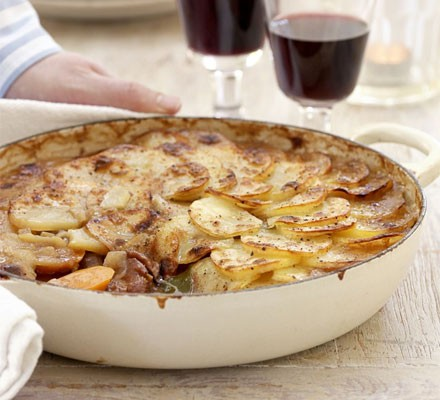

Lancashire Hotpot
Home

Description
A traditional hotpot from the Lancashire area of England. Mutton or lamb with vegetables in a rich gravy and topped with sliced potatoes. A winter warmer for colder evenings.
Ingredients
- 100g butter
- 1kg lamb or mutton
- 2 onions
- 4 carrots
- 2 lamb kidneys (optional)
- 2 tbs Worcestershire sauce
- 500ml stock
- 2 bay leaves
- 1 - 2kg potatoes
Steps
- Heat oven to 160C/fan 140C/gas 3.
- Heat a little of the 100g dripping or butter in a large shallow casserole dish and brown 900g stewing lamb chunks in batches, lift to a plate, then repeat with 3 trimmed and sliced lamb kidneys.
- Fry 2 chopped onions and 4 peeled and sliced carrots in the pan with a little more dripping until golden.
- Stir in the stewing lamb and kidneys and 2 bay leaves, then turn off the heat.
- Arrange 900g peeled and sliced potatoes on top of the meat, then drizzle with a little more dripping.
- Cover, then place in the oven for about 1½ hrs until the potatoes are cooked.
- Remove the lid, brush the potatoes with a little more dripping, then turn the oven up to brown the potatoes, or finish under the grill for 5-8 mins until brown.